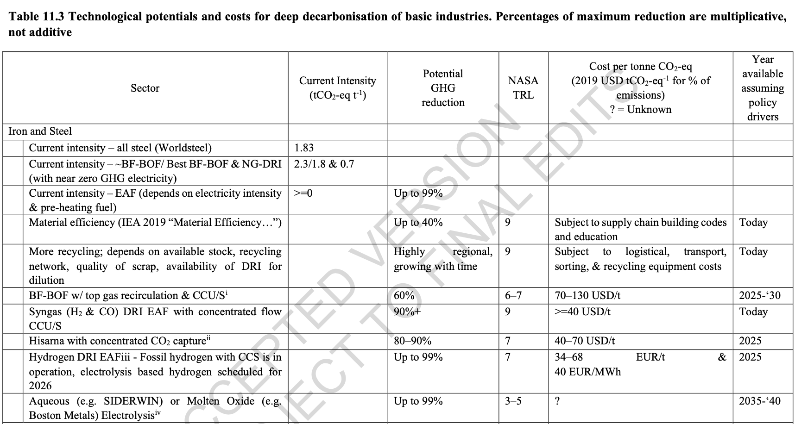
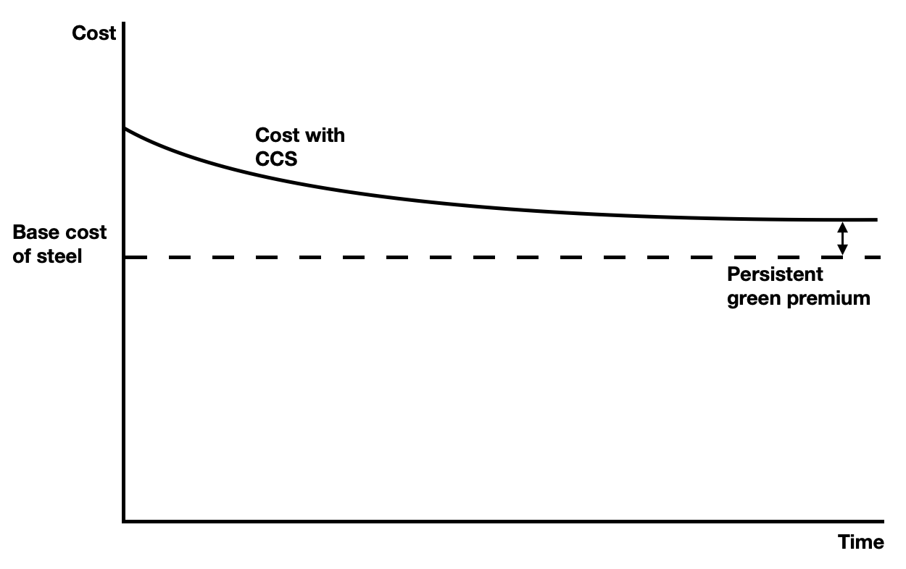
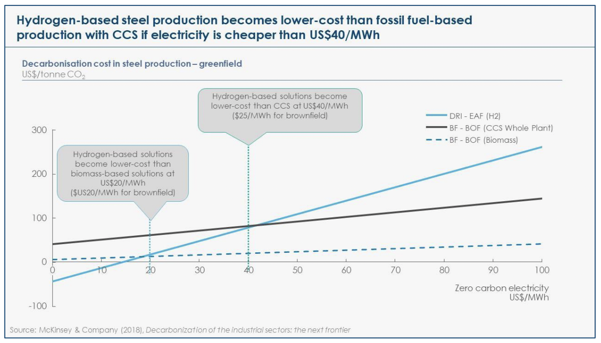
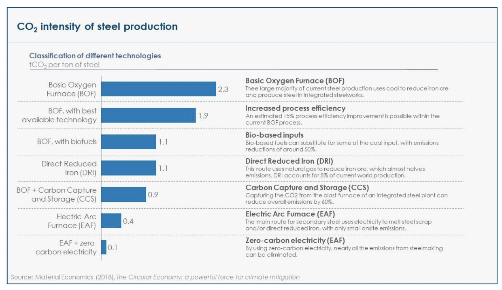
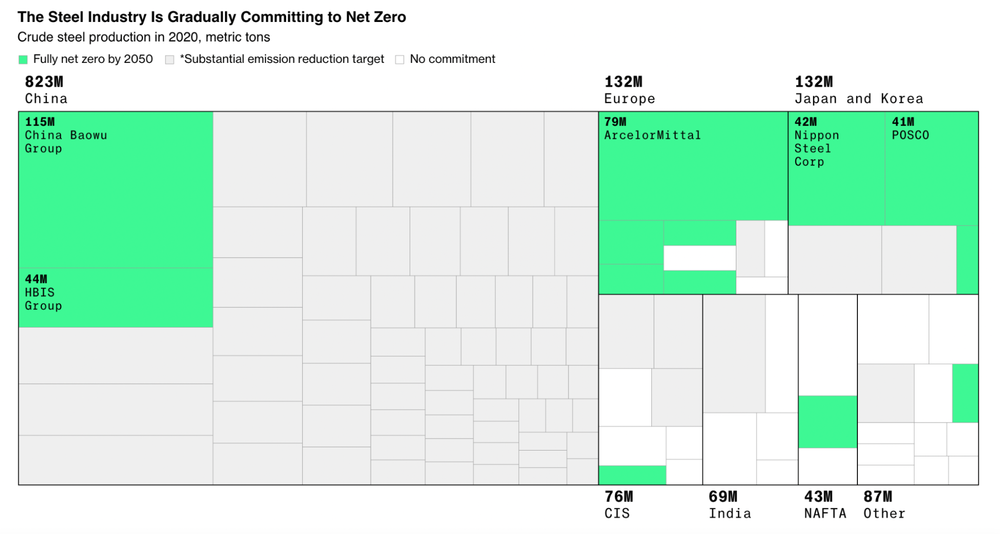
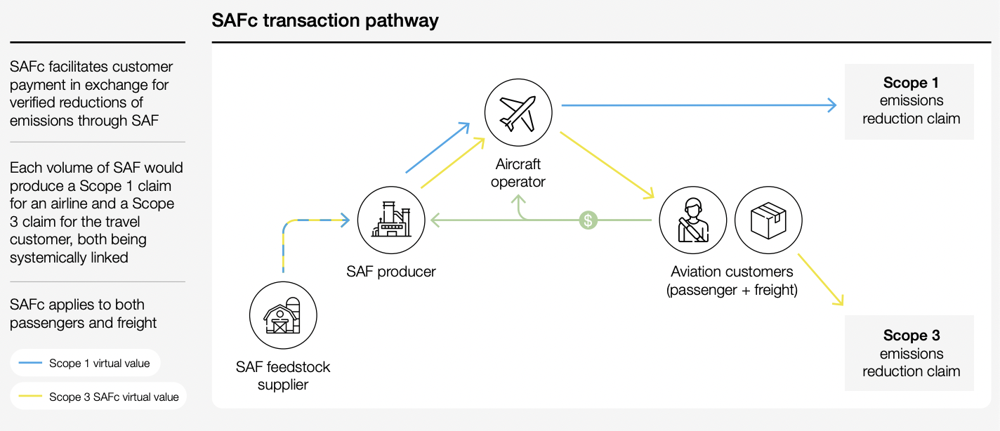

Could we use AMCs for green steel?
By Neil Hacker
TLDR
There are a number of pathways towards decarbonising steel today, including CCS, increased recycling, moving to hydrogen DRI, as well as other more nascent technologies. This report suggests that a targeted pool of money, in the style of an advance market commitment (AMC) could be particularly catalytic at accelerating development in these more nascent technologies and that this represents an as yet unmet opportunity.
We don’t necessarily know which steel pathways will be most able to scale in the future and an AMC allows a technology agnostic way of promoting many different options. While some methods, like hydrogen DRI, are receiving much more support at the moment there are other potential methods which will struggle due to the high costs associated with developing new technologies and could take years to become competitive with the more CO₂ producing status quo methods.
This report compares and contrasts a Steel AMC to the Frontier climate AMC, and finds that there is strong reason to think targeted demand side support could have a catalytic effect for nascent technologies just like it did in carbon removal. Using demand side interventions also allow funders to remain more pathway neutral than they would otherwise be able to if they were funding infrastructure directly. However, a steel AMC would have to deal with the fact that steel is a physical asset and that this would be trying to disrupt an existing market with very large incumbents.
This piece aims to push those who are working on demand side initiatives for steel production to consider more strongly the role an AMC for nascent steel production technology could play.
Intro
If someone were to try to have the largest impact in accelerating the steel industry towards net-zero, what should it do? Specifically this report looks at the use of advance market commitments (AMCs) and contrasts the lessons from Frontier’s carbon removal AMCs to potential options for steel.
Why is steel going to be different to CDR?
Given that the only other AMC of this type has been started by Frontier with carbon removal (CDR) I want to outline some of the main differences between it and steel which might lead to somewhat different approaches being taken.
1. Steel production exists today.
The steel problem is about changing an industry, not creating one. All the CDR players are either relatively or very new and so have not built out any large scale infrastructure of any kind yet. One consequence of this is that the CDR Frontier AMC therefore accounts for virtually the whole demand side and so has a lot of influence over the market. However, with steel there are many incumbent companies who exist today with cash flows who would have to actually change their behaviour in order to take advantage of any steel AMC, which would likely involve getting buy-in from stakeholders who have not as yet been persuaded to take any voluntary actions towards greening their production. This also means you might be trying to influence companies who already have large bureaucracies which might make progress slower.
2. Steel production is geographically distributed.
While China does dominate both the production and consumption side of steel, countries all around the world are involved in the market on both sides and so we want to consider solutions that might be most catalytic for world steel production, not necessarily just US steel production.
It is of little use on the global scale if we just introduce better solutions in the US that are not actually globally competitive as then there is little reason for other countries to out of their own interests also follow suit. We also can’t fully rely on policy levers like cross border carbon tariffs as while these might do something for equalising the price of green and non green steel a lot of production is consumed within the same country.
With CDR for the most part you can focus your efforts on the US and Europe. Because of how CDR works everyone in the world would benefit equally no matter where it is done but these richer countries will have deeper capital markets and are more likely to have policies in place to support an industry that is almost fully for the public benefit.
3. Steel is often seen as a strategic national asset
Many countries regard the ability to meet at least a reasonable amount of their steel consumption as an important economic-security goal. This has two effects, the first is that this has often led to large overcapacity in the steel market which only makes selling more expensive green steel harder. The second, is that this means steel production will likely stay globally distributed.
The overcapacity issue is one that means steel producers are intensely unwilling to bear large amounts of the cost premium themselves. They are already operating in an industry with thin margins and so any increase in prices can have a drastic effect on their competitiveness.
While CDR may be seen as a strategic asset countries try to get to meet their own personal climate goals there are basically zero economic security issues from not having CDR. It is also something that is likely to be if anything undersupplied and so more capacity will for at least the next few decades be a boon to the industry.
4. Steel is a two sided market that produces an economically useful good.
With CDR what buyers care about is basically information that carbon has been removed. With steel, some buyers might care about this but you still need to actually go and find someone willing to buy and use the physical steel you produce.
There are a number of options you can therefore use. One is to match up the physical steel produced in a zero, or low, carbon way with steel users who are willing to directly pay more for using green steel. Another is to create a certificate type system which disaggregates the physical green steel from the ‘green’ part. In this situation the group who ends up with the physical steel and the group who ends up with the right to claim the carbon neutrality of the steel they use won’t necessarily be the same. With CDR these approaches are basically the same, with steel we need to be aware that each has advantages and disadvantages.
5. The value chain for steel is much longer than for CDR.
With CDR you have buyers and you have the suppliers who are directly responsible for creating the green technology used in the process.
CDR buyers ----- CDR producers (also the green tech)
With Steel you have eventual buyers of goods that use steel, companies that buy steel to use as an input, steel producers, and for some green technologies there would then also be the companies steel producers are buying from that supply the green tech.
Buyers of products that use steel ----- consumers of steel ----- producers of steel (sometimes the green tech) ------ suppliers of green tech (i.e hydrogen)
The chain for steel above is already much longer than for CDR and in reality the “producers of steel” often is an amalgamation of many different companies, ore producers, ore refiners etc, all this adds uncertainty about abilities to pass on costs. If the consumer of steel is the buyer do they take the hit or try to pass it on to their eventual customers. If you try to generically promote green steel will this be a strong enough demand signal to green tech companies further down the value chain to actually get involved?.
6. Accounting and margins.
CDR is largely being purchased by corporate customers with very large profit margins. They can also, at least eventually, use their purchases very directly to reach net-zero. With steel for most people it would end up being a scope 3 emission which might change the emphasis they place on it. For those who more directly use it, say in the construction sector, they have very slim profit margins a lot of the time so their ability to pay for greener steel may be hampered.
The potential buyers for CDR is maybe every company and government, as it is the embodiment of not removing emissions from any source. With steel you are likely only going to have buyers who are actually using reasonable amounts of steel as potential partners which might be trickier. This could in theory not be the case, say if paying for the difference in the cost of green steel vs normal steel counted in a similar way as an offset credit. However, there are many other methods of offsetting that would sell for much much cheaper than the approaches listed here, although the quality of a lot of these is dubious.
Overview of current emissions
Currently we produce around 1,900,000,000t of Steel a year. The IPCC AR6 WGIII report notes that steel is responsible for around 20% of global direct industrial emissions (as of 2019). According to the WRI, emissions from iron and steel come in at around 2.9Gt CO₂ making it the largest industrial sector in the world.
The emissions per ton vary dramatically based on how it is produced.
- The dominant (73%) way we make steel is using Blast Furnace-Basic Oxygen Furnace (BF-BOF) which creates primary steel, this emits ≈ 2.3tCO₂ per ton of steel
- The other main method (≈22%) is using electric arc furnaces on scrap steel which creates what is called secondary steel which has much lower emissions of ≈ ≤0.3tCO₂ per ton of steel
- Direct reduced iron (DRI) is currently a tiny proportion of the steel market (≈5%) but is far less polluting. The dominant power source today is natural gas which means life cycle emissions are in the range of 0.8-1.1tCO₂e per ton of steel. However, by changing the power source this approach can in theory get down to virtually 0tCO₂.
Roughly 20% of steel produced is exported, but if we look just at China that percentage falls to around 5% (60Mt exported vs 1300Mt produced)
Green technologies

Broadly there are a few buckets we can look at.
Using what we have better. This involves using produced steel in more efficient ways and also recycling more of the steel we create. However, a very high percentage of steel is already recycled so there are questions about how far this approach can actually take us. Also while material efficiency can lower the emissions from steel use it doesn’t lower emissions from steel production which is what this report is aimed at.
CCS. One option is to install CCS capacity at very large numbers of steel plants. This can’t get us down to 0t CO₂. For BF-BOF, the main way steel is made in the USA CCS might only get us down to 1t CO₂e per ton of steel, however this is still a reduction of almost 50%.
An advantage this approach has is that it can be applied to the existing steel infrastructure we already have which might make implementation/adoption easier. This report will recommend a steel AMC not go down this route however in its focus. The reasons for this are that CCS adds a cost to the output of the production process in such a way that there will always be a green premium. No matter the cost curve of CCS it will therefore always leave green steel costing more. Other approaches that affect the production process itself, while they might start out more expensive, at least have the potential to reach cost parity with traditional steel.
There is also the question of how a steel AMC would deploy funding. If it targeted CCS this might involve having to pay very large amounts for the creation of a single CCS facility, which would probably not lead to as much learning as if this money was deployed in more nascent technologies.
From the ETC sectoral focus on steel: “Estimates from the Global Carbon Capture and Storage Initiative (GCCSI) suggest that current costs for capturing CO₂ from steel furnaces could be around US＄65-US＄70 per tonne of CO₂, potentially falling to around US＄55 in future”. Given that BF-BOF production produces ≈2.3t CO₂ per ton of steel this would put the green premium price around ＄150-160 with today's technology and potentially just below ＄130 in the future.

This does not at all mean CCS should not be pursued just that an AMC may not be best placed to promote the increased use of CCS. The reason for this is broadly that CCS will never be able to lead to the production of steel that is cheaper than current methods, this means there will always be a cost premium and so without supporting policy there will never be an economic rationale for taking it up. How catalytic an AMC could be would likely be much less impactful than whatever policies are in place to support CCS. To be certain a carbon price type system in some ways might look like a contracts for difference AMC set up but an important fact here is that the scale of costs involved would almost certainly make this strategy prohibitive for voluntary buyers in almost any timeframe.
Some group may want to use AMC type vehicles for CCS at a certain point. One reason is that CCS will likely have a large role to play in decarbonising steel. It is just unclear if an organisation like the one being proposed in this report, or the buyers it represents, could actually be catalytic here or whether it would be much more of an ongoing purchase operation at some fairly stable green premium. As pointed out above this would be more likely to occur with more policy support so it may not be the right time for a catalytic steel AMC to try to facilitate such an approach.
Swapping production methods - more established. Buyers could use their purchasing power to promote buying from approaches like DRI-EAF which, based on the source of energy, can reduce emissions anywhere from 90% to >99%. A number of plants are starting to operate that use green hydrogen as the fuel and while they might be more expensive today if the technology can be made more efficient this presents one of the largest decarbonisation options around.
Again from the ETC report “electricity prices will have to be below US＄40/MWh before hydrogen-based DRI becomes more economic than carbon capture on BF-BOF for greenfield plants. For brownfields plants, this breakeven point would go down to US＄25/MWh (US＄20/MWh for plants using biomass).”
Making green hydrogen is very energy intensive and according to BNEF the currently planned capacity would only get us to 1.8% of the volume the steel industry would need to hit net-zero by 2050. We would need somewhere around 122Mt of green hydrogen per year and at 50kWh/kg this would mean we need 6000 TWh (or roughly as much as all renewable energy generation on the face of the planet today)

As we can see from the above if renewable power gets to around $10/MWh then we effectively eliminate the green premium associated with hydrogen. Another factor that can have a similar effect is to expand the amount of electrolyser capacity. Per this IRENA report we might see a 40% reduction in the cost of actual electrolysers through learning by doing effects by 2030 with current planned capacity. This could lower the final price of green hydrogen by around 20%. It might be tempting for a group to consider if they could be catalytic to this trend but it would seem that, especially if you were only operating in the steel industry, while this might be a nice tailwind you would need vast amounts of money to actually affect the trend.
There are some existing projects using this method; Hybrit is a joint venture between steelmaker SSAB, Vattenfall, an energy supplier, and LKAB, an iron ore producer; it uses the DRI-EAF route with hydrogen as the energy source. The first delivery of steel was in 2021 and the group hopes for commercial operation scale by 2026.
H2 Green steel is another venture of the same type which is aiming for commercial production by 2024 and scales of 5Mt by 2030. For a sense of scale H2GS has raised >$100m so far.
ArcelorMittal is working on two pilot plants in Germany (Bremen and Eisenhuttenstadt) which it hopes will be able to produce 3.5Mt/yr by 2030. The conversion of the existing plants would require around €1-1.5bn and they expect production costs to increase by 60%. The Bremen plant is to start with natgas and then transition to hydrogen when the North German Clean Hydrogen Coastline network gets going. Eisenhuttenstadt will use sponge iron from Bremen until it has access to the hydrogen cluster in East Brandenburg ArcelorMittal also have Europe's only DRI-EAF plant at the moment in Hamburg which they are planning on swapping over from natgas to hydrogen.
Efforts could be made to simply try to create more DRI facilities even if they currently use natural gas which could then be transitioned to other fuel sources in the future using pathways like Midrex or Energiron HYL. This approach is not very common in Europe but is more so in other parts of the world with more abundant natural gas. While not achieving the same emissions reductions, emissions are still around 1.1 – 1.2 kg CO2/kg, it could start building up the stock of plants to be transferred over to hydrogen at a later date.
Swapping production methods - less established. Alternatively buyers could use their purchasing power on approaches that today are much more experimental, for example aqueous electrolysis or molton oxide electrolysis (Boston Metals) routes could be funded. This approach probably matches most closely how Frontier is approaching CDR, i.e by helping approaches that are more experimental to get down their cost curve quickly.
There is also a method called the HIsarna process, which has had a pilot plant at Tata Steel IJmuiden from 2010 could also see decent reductions in emissions, however most of these will still come through CCS usage.
It is worth pausing to note though that the reason Frontier is doing this with CDR is because there is no other choice, nothing really existed even a few years ago. We should be careful to assume that this is therefore the best option for a new group to take when it comes to steel, although it might be one of the most catalytic.

Quoting from the ETC report these are the priorities it lays out for R&D:
Public and private R&D spending, as well as investment in pilot plants, should focus on:
- Driving down the cost and increasing the efficiency of electrolysis equipment;
- Piloting and driving down the cost of hydrogen-based reduction;
- Ensuring the feasibility and driving down the cost of innovative BF-BOF designs which would reduce CO₂ capture costs.
Additional R&D priorities would also include:
- Driving down the cost of energy efficiency and carbon efficiency technologies that can drive down carbon emissions from existing plants;
- Developing iron electrolysis as a potentially lower-cost solution in the long term;
- Developing innovations that enable higher-quality and higher-value recycling of steel (including potentially making recycled steel with higher levels of copper contamination usable in a broader set of applications than it currently is).
Other potential new routes include using hydrogen plasma instead of hydrogen gas, biomass-based Ironmaking i.e using biomass, in various forms, as a feedstock and other thermochemical techniques. For information on various less developed iron and steel making technologies, including those above, you can go here.
The role of geography
Both the Hybrit and H2GS projects above are operating in Sweden which has vast amounts of hydroelectric renewable energy, very pure natural ore which is ideal for DRI methods, and a carbon tax of around $120/t. Both of these mean that actually creating green hydrogen makes a lot more sense economically.
One set of these factors, cheap hydropower and pure natural ore, is very geographical, the other, a carbon tax, is political. This does bring us to a question though that CDR faces much less. We have to try to come up with solutions that can meet production where it is not where we would like it to be.
Some areas will have very little access to sites that could support sequestration of carbon, some areas will not see cheap renewable power for a very long time, and some may never see renewable power cheap enough to compete with the current methods of steel production.
Currently, given that most steel production is BF-BOF it has been positioned to be close to sources of cheap coking coal and not with cheap hydrogen in mind. Promoting a portfolio of options that all lower the emissions from steelmaking at prices that can approach current levels allows different geographical constraints to be taken into account when deciding which approaches to use.
Incumbents
While there are lots of ambitious goals being thrown around, not that many of the current steel producers have actually committed to net-zero targets. A large part of this is likely due to the fact that while very few of the above technologies would materially increase the end user cost of goods (likely increases in the cost of a car are maybe 1-2%) producers who would be charging the markup on the actual steel would still be severely disadvantaged given the slim margins they already operate under. The key challenge for groups who want to speed up this transition is therefore how to deal with firms believing they will be at a competitive disadvantage from investing in these technologies.

Source
Current efforts
Responsible steel
Basically this is a full spectrum ESG certificate with 12 principles steel production has to pass (only 1 is on emissions). From their website, “The corporate owners of ResponsibleSteel certified sites are committed to the global goals of the Paris Agreement, and both certified sites and their corporate owners are taking the actions needed to demonstrate this commitment.” I don’t know what this looks like in practice but the certificate is definitely not focused mainly on emissions.
You can get the certificate by using any decarbonisation strategy and as far as I can tell it is not like the sustainable aviation certificate where you can use the certificate to count towards scope 3 only scope 1. Also you can use your forward looking plans to have current steel get the certificate which I do get in some ways, any plans in steel are long term construction projects, but this does slightly blunt the emissions impact.
SteelZero
From their site, “we’re sending a strong demand signal to shift global markets and policies towards responsible production and sourcing of steel”.... “Steel producers would not sign up to the SteelZero commitment however SteelZero will engage steel producers directly to share the message from demand side businesses”. To me this seems more like a theory of change but not a theory of action kind of thing.
You can be part of this group by procuring steel with any of the below
- Steel produced by a steelmaking site where the site’s corporate owner has defined and made public both a long-term emissions reduction pathway and a medium-term, quantitative science-based GHG emissions target for the corporation. A target approved by the SBTi (Science Based Targets initiative) or equivalent would meet this interim requirement in full.
- ResponsibleSteel™ Certified Steel, or equivalent
- Low Embodied Carbon Steel, with a defined specific emissions intensity which takes into account the proportion of end of life scrap
Again I understand why in steel allowing forward looking plans to get you into the scheme is understandable but I do worry about the follow through.
Sustainable Aviation Fuel Certificates (SAFc)
I have included this as I think this is one of the routes that steel could go down. The SAFc framework is modelled on Energy Attribute Certificates (EACs), a well-established virtual accounting instrument. It works similar to traditional offsets in that you can trade your certificate with others until the claim is retired in a registry

The usage in steel might have to be slightly different, here one problem is that airlines are so low margin that they can’t really afford the SAFs, so you get corporate buyers to pay and offset their scope 3 emissions. With Steel it’s less true that the users necessarily have thin margins e.g automakers. However, it might also be more difficult to get actual corporations involved as they are more divorced from steel usage than flying.
“The main drawback of developing SAFc as an EAC is that international emissions accounting standards rely on detailed guidance that excludes market-based mechanisms as an emissions solution”. This would also likely be the case with steel to start but as the report mentions this is more a shortcoming of current accounting.
First Movers Coalition
This is the closest thing to what a steel AMC might actually do (they also do in fact have a steel section) where they are aggregating buying power with the intention of matching it with suppliers. Currently they are doing this in conjunction with the Mission Possible Partnership, SteelZero and ResponsibleSteel.
Commitments are voluntary however and it is not clear the actual mechanism that will be used to channel them. They mention being interested in everything from nascent tech like electrowinning or electrolyzers to CCS and hydrogen DRI-EAF
As far as I can tell the only US company taking part at the moment is Ford. Other sectors, like CDR, have more US companies because, one, more CDR players are in the US, and two, it is about delivery of information not a physical good so there is less need to colocate buyers and producers.
At the moment most green steel pilots are taking place in Europe for largely geographical and political reasons and this likely accounts for the dearth of US companies in both lists. However, especially with the influx of money coming into climate solutions from the recent Inflation Reduction Act, we might hope that this can change in the near future.
What kind of approaches could a steel AMC take
There are three broad categories I think it makes sense for a steel AMC to at least consider
- Try to incentivise more DRI plants to be built, either directly to utilise hydrogen or to work with natural gas but could be transitioned to hydrogen.
- Be a buyer of first resort for the much more nascent tech like MOF or what Charm Industrial wants to do
- Be the driving force behind a SAFc type certificate system but for steel.
I will address them each in turn below. After that I will also discuss where it might make the most sense for a steel AMC to actually get the source of funds from, whether to partner with the FMC or go it alone so to speak (also I will consider a hybrid).
1. Try to incentivise more DRI plants to be built
As it stands today DRI plants, that use hydrogen, are believed to be one of the two main ways to decarbonise steel. As we saw in the figure above, in the green technology section, depending on the actual cost of zero carbon electricity this approach can become very expensive. At $50/MWh it will add around $100/t. One thing for a buyer to consider is how much pre-committed demand they have. If you build a DRI plant that creates 1Mt/yr (roughly the average of current projects) then at $100/t green premium you would need to be able to cover $100,000,000 in extra costs per year. The reason the projects above are going ahead is because they are operating in countries with reasonable carbon prices and have access to renewables at prices far below $50/MWh, but this is not the case in most places. Without broader hydrogen infrastructure and a combination of a carbon price/very cheap renewables it is questionable how catalytic a steel AMC could be with their purchases.
2. Be a buyer of first resort for more nascent technologies
I think this might be one of the more high leverage solutions a steel AMC can go after. There are a number of approaches that are at the beginning of their cost curve and could really benefit from buyers in a similar way to CDR currently. From steam reformed bio-oil to metal oxide electrolysis there are new approaches that could transform how large parts of the steel industry operate. These technologies are also a lot closer in spirit to the CDR efforts Frontier is supporting. They are likely going to have much higher costs to start but could show really rather rapid cost declines over time. Also many approaches that fall into this category can potentially be more easily deployed without policy. The reason is largely that they require less large-scale supporting infrastructure like CCS transportation pipelines or hydrogen networks.
Create a certificate system
One issue green steel might face is that the exact grade and type of steel really matters to the buyers. If you have no way of decoupling the “greenness” from the steel then you would need your green steel plants to produce the exact kind of steel the people willing to pay the cost premium want. While this is by no means impossible it does place restrictions that might hamper growth in the sector.
If you could decouple these two things then you may still have the same situation of buyers directly buying the green steel but the range of potential buyers will now have expanded dramatically. For example if you used DRI plants to make hot briquetted iron, which some call “Steel’s Most Versatile Metallic” and a certificate representing the low emission production method, this could leave the producer with a much more open set of options for who will be willing to buy their outputs. Currently there are no public plans for work of this kind to take place.
Similar approaches have been used with Renewable Energy Certificates (RECs) which allowed the physical electricity to be decoupled from the zero emissions nature of its generation. The REC allowed any buyer to effectively pay the green premium on the cost of renewables. RECs have been credited with accelerating the transition to renewables but are not without their issues.
One issue with RECs is that they raise questions about additionality, if most renewable plants are being largely financed through government subsidies and RECs don’t make the companies reinvest in expanding capacity then it is not necessarily clear you will actually expand the supply of renewables though your REC purchases.
A second issue relates to grid matching. RECs don’t tell you when the renewable energy you are claiming was produced. It could be that the project selling RECs only produces energy during peak sunlight hours, which is already when most renewable energy is created. In this case if you buy the REC while you may be contributing to more renewables produced during the day, your money will not help stimulate ways of storing that renewable energy for use at night time, which means it will have a reduced benefit towards moving to a 24/7 renewable grid.
If we adopt a certificate scheme in green steel these issues are not necessarily as likely to be problems. Firstly, an AMC that buys certificates may be able to more credibly commit to buying from projects which are trying to expand their capacity to grow green steel production. Secondly, as steel plants need to operate basically 24/7 buying certificates won’t risk you only incentivising green steel production at some specific point of the day.
The importance of this approach will likely depend on which of the above two options a steel AMC wishes to place emphasis on. If it goes more for (1) then the certification system will likely become more important as it may well be unlikely buyers in the exact geographical region are willing/able to pay the green premium themselves.
If a steel AMC goes more for (2) then while work on this is still going to be useful the contracts, at least in the beginning, may not require the same level of framework as it will likely be more directed funding.
Next steps for a potential steel AMC
Currently while there are a number of “buyer clubs” being created there are no public plans to create explicit links between these and the open market of potential green steel solutions through use of contractual AMCs. This seems like critical work.
Decide whether they want to be an implementation partner to the FMC
The actual raising of funds may be in some ways more difficult than Frontier has faced with CDR. For example most of the buyers there are very profitable tech companies, this would probably not be the case with steel. As such it might take more institutional networks to actually elicit money from buyers which the FMC given the cultural status it has might find easier.
Decide whether to promote more established pathways or more nascent technologies
Hydrogen powered DRI is currently thought by most in the industry to be one of the primary ways steel will decarbonise. Part of this is that other options have much much lower TRL’s however. A steel AMC could create offtake agreements to try to induce the expansion of these types of technologies however it is not clear how much catalytic effect this can have without the presence of broader hydrogen networks, which the steel AMC organisation may not be able to affect much.
At the end of the day a new steel AMC wants to be incentivising steel production pathways more than steel producing companies. For any approach to have any hope of achieving a meaningful scale for decarbonisation it will need to be adopted by vast numbers of the current incumbent firms. For example if an AMC was to buy from Boston Metals it should be aware that its ultimate aim is to make MOF a credible production method more so necessarily than Boston Metals a long lived independent company, though the two aren’t mutually exclusive.
Given the very large upfront costs of approaches like hydrogen DRI it might make more sense for a steel AMC to adopt a similar approach to what Frontier is doing with CDR and fund more nascent technologies which could be trialled in a more iterative style. We have also seen with CDR that already the presence of groups like Frontier has helped create many more approaches than were previously thought about. It is worth trying to do something similar with steel and the time to do that most effectively is as soon as possible.
Funding amount
If we take the ArcelorMittal example it is hoping to produce 3.5Mt/yr but expects a cost increase of up to 60%, which might add ＄100-200 per ton premium. This would lead to a total premium per year of ＄350,000,000-＄700,000,000 for just this plant. This would also not be at scale until 2030 so it is unclear how catalytic a new steel AMC could be.
With smaller amounts, in the ＄10,000,000-$100,000,000 a steel AMC could very well provide the cost premium for more nascent technologies like MOF or steam reformed bio-oil which will almost certainly start at smaller scales and then grow rather than the DRI-EAF route which will likely go straight to large scale plants.
Some of the paths forward for a steel AMC will have to be decided through discussions with the potential payers. The risk profiles of the different approaches above are different, with the DRI it would likely be substantial amounts of money going to a single facility with the more nascent technology it would likely be a more wide spread spending of smaller amounts of money. Given the amount needed for the former it is questionable to what extent these two approaches could be pursued in parallel.
Conclusion
No single pathway or approach is going to be able meet the challenge of decarbonising steel, however, not all approaches are currently getting the same level of attention. This post aims to empahsise the role more nascent technologies could play in the long term decarbonisation process and draw attention to the use of advance market commitments could play in pulling these technologies forward.
Acknowledgements
I want to thank Nan Ransahoff, Christina Chang and Peter Reinhardt for feedback on this report and also Stripe for funding it.